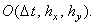

|
Приведём сравнительную характеристику разностных схем,
аппроксимирующих двумерное дифференциальное уравнение в частных производных первого порядка:
Для определённости рассмотрим случай .
1. Явная разностная схема
Имеет порядок аппроксимации  Условно устойчива
Решается с помощью рекуррентного соотношения (8.7).
Условно устойчива
Решается с помощью рекуррентного соотношения (8.7).
2. Схема расщепления
Имеет порядок аппроксимации 
Абсолютно устойчива.
Решается с помощью рекуррентных соотношений (8.13).
3. Схема переменных направлений
Имеет порядок аппроксимации
Абсолютно устойчива.
Решается с помощью рекуррентных соотношений (8.15).
4. Схема предиктор-корректор
Имеет порядок аппроксимации
Абсолютно устойчива.
Решается с помощью рекуррентных соотношений (8.17).
Напомним, что в случае  для аппроксимации производной
по координате x следует использовать правую конечную разность и для реализации расчётного
алгоритма задать правое граничное условие по x; в случае для аппроксимации производной
по координате y следует использовать правую конечную разность и для реализации расчётного
алгоритма задать правое граничное условие по y. Поэтому в случае
и(или) вид рекуррентных
соотношений изменится и для их расчёта потребуется задать циклы в расчётных алгоритмах следующим образом: для аппроксимации производной
по координате x следует использовать правую конечную разность и для реализации расчётного
алгоритма задать правое граничное условие по x; в случае для аппроксимации производной
по координате y следует использовать правую конечную разность и для реализации расчётного
алгоритма задать правое граничное условие по y. Поэтому в случае
и(или) вид рекуррентных
соотношений изменится и для их расчёта потребуется задать циклы в расчётных алгоритмах следующим образом:
Порядок аппроксимации и устойчивость перечисленных разностных схем при этом останутся таким же.
|